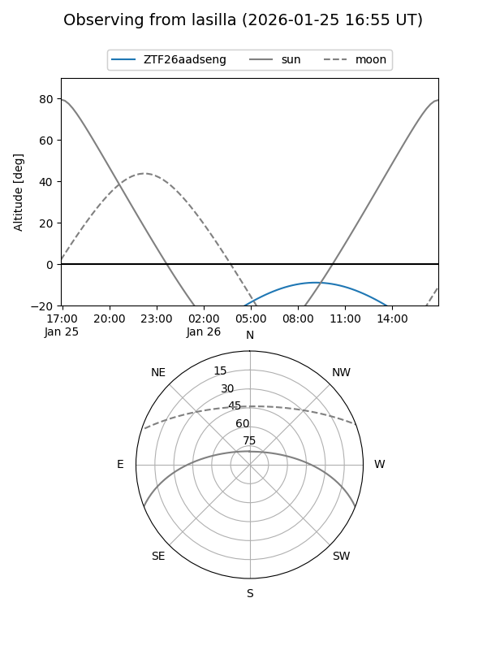
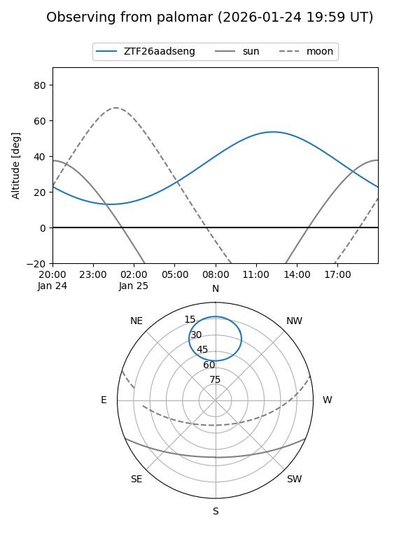

ZTF26aadseng
Target ZTF26aadseng at 2026-01-25 10:06
Aliases and brokers:
FINK: link
Lasair: link
ALeRCE: link
alt names
ZTF26aadseng (ztf,fink_ztf)
Coordinates:
equatorial (ra, dec) = 191.5093,+69.82061
equatorial (HMS+DMS) = 12:46:02.22,+69:49:14.20
galactic (l, b) = (123.6187,+47.30044)
Flags:
Photometry:
last ztfg=20.22
1 ztfg detections
Lightcurve

Visibility


Additional plots